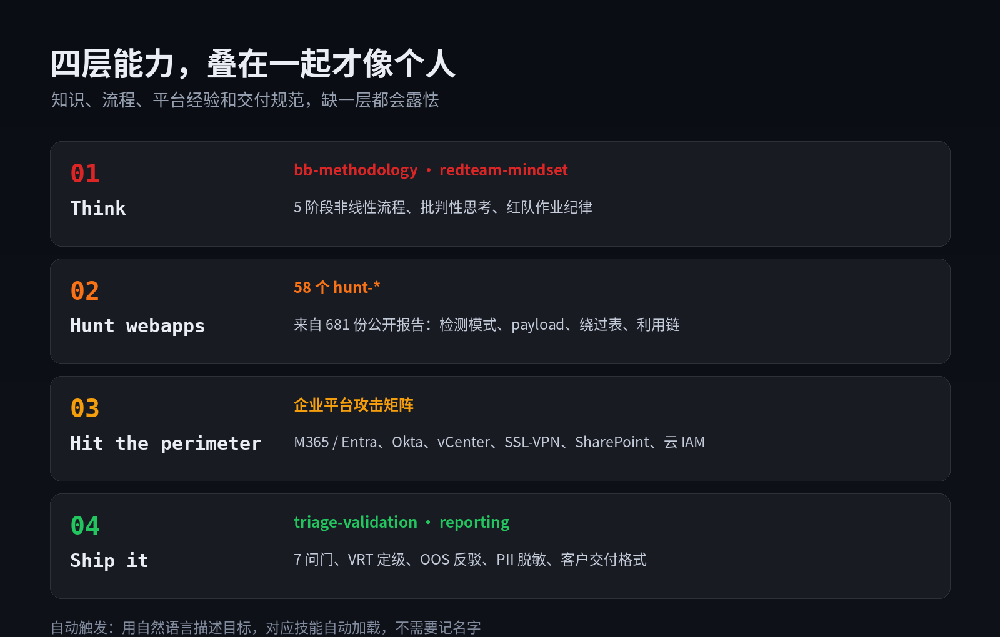
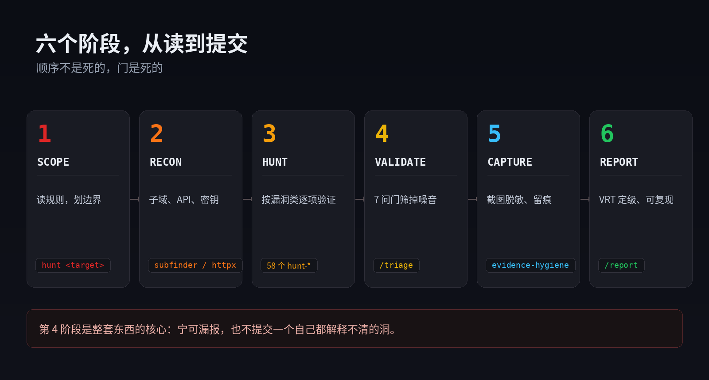
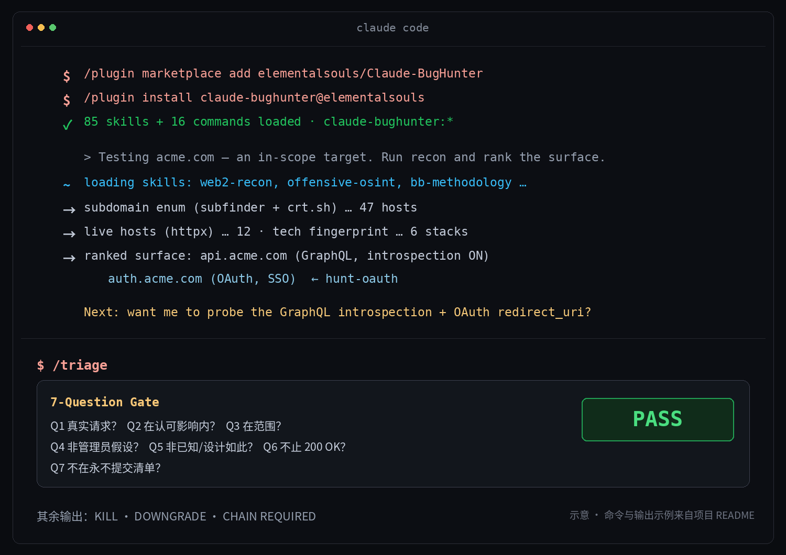
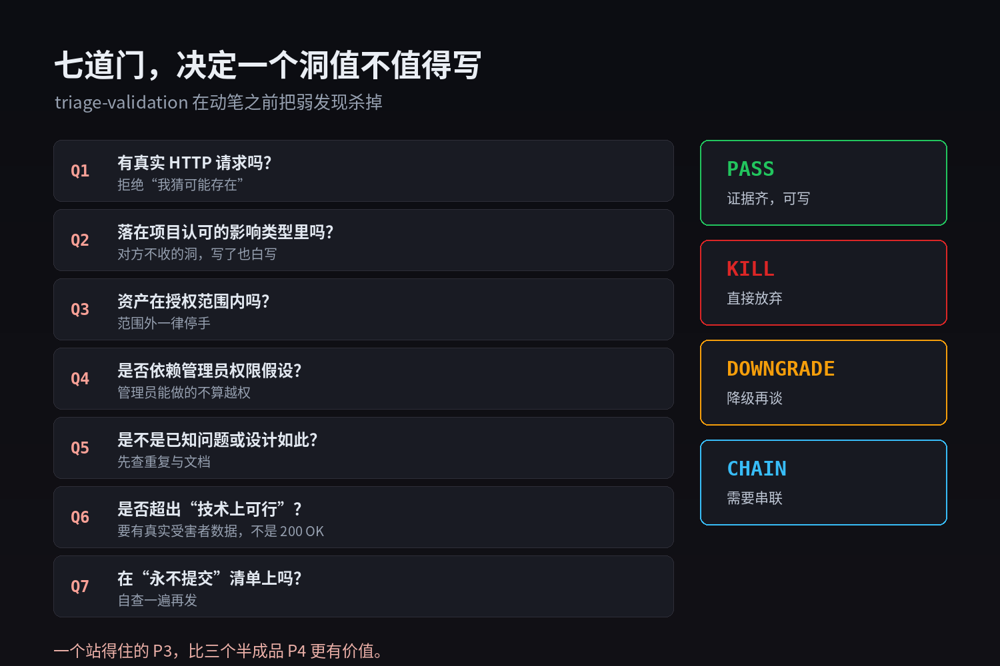

大多数人第一次用 Claude 做安全测试，都是同一句话：“帮我看看这个站有没有漏洞。”
然后得到一段四平八稳的 OWASP Top 10 科普。听起来都对，落到具体目标上，一句也用不上。
Claude-BugHunter 想解决的就是这个落差。它不是一个扫描器，而是一整套塞进 Claude Code 的技能包：把真实赏金项目里反复验证过的检测思路、验证门槛和写报告规范，变成模型可以自动加载的知识。
它不教模型“更凶”，它教模型“更有章法”。
01
它到底往 Claude 里塞了什么
仓库规模先摆出来：85 个技能、16 个斜杠命令、681 份公开漏洞报告沉淀出的模式，覆盖 24 类核心漏洞。其中 58 个是以 hunt- 开头的专项技能。
这些技能分成四层，叠起来才完整：

四层能力：方法论、Web 漏洞、企业边界、交付规范
第一层是“怎么想”。bb-methodology 给出一套非线性的工作流，redteam-mindset 强调红队作业纪律。它不规定你必须先做什么，而是告诉你每一阶段该问什么问题。
第二层是“怎么找”。58 个 hunt-* 技能按漏洞类拆分，每一类都带着从公开报告里提取的检测点、payload、绕过表和组合链。这也是它和“一个大而全的安全提示词”最大的区别。
第三层是“打边界”。M365 / Entra、Okta、vCenter、SSL-VPN、SharePoint、云 IAM 这些企业常见入口，各自有专门的攻击矩阵和 2024 到 2026 年的 CVE 链路知识。
第四层是“交得出去”。验证、取证、写报告。这部分最不性感，但决定了你交上去的东西是被接受，还是被当成噪音。
触发方式很省心：不需要记技能名，用自然语言描述你在测什么，对应的技能会自动加载。这是 Claude Code 的 Agent Skills 机制，本质上就是一组带元数据的 SKILL.md。
02
安装：三条路，按需要选
作者给了三种装法，覆盖从“只想试试”到“要跑完整流程”的不同需求。
方式 A · 插件安装（最省事）
在 Claude Code 里直接敲两行：
/plugin marketplace add elementalsouls/Claude-BugHunter
/plugin install claude-bughunter@elementalsouls
85 个技能和 16 个命令会以 claude-bughunter: 前缀加载，升级插件版本就能更新，不会往 ~/.claude/ 里拷一堆文件。
方式 B · 克隆后脚本安装
想要可复现的版本，或者需要 hunt 脚手架，就用这条：
git clone https://github.com/elementalsouls/Claude-BugHunter.git
cd Claude-BugHunter
bash scripts/install.sh # Windows: pwsh ./scripts/install.ps1
它会把这些技能拷到 ~/.claude/，同时把 hunt 这个项目脚手架命令接好。加上 --all --burp-mcp，可以一次装到 Claude Code、OpenCode、Codex CLI、Hermes、AntiGravity 五个环境，并把 Burp 的 MCP 服务接上。
方式 C · 只装命令行工具
pipx install git+https://github.com/elementalsouls/Claude-BugHunter
这是它自带的 cbh 命令行工具，可以在终端里编排侦察、分类、验证和报告，不依赖 Claude Code 的界面。
| 方式 | 适合谁 | 拿到什么 |
|---|---|---|
| 插件 | 只想快速试 | 技能 + 命令，自动更新 |
| 克隆安装 | 要完整流程 | 再加 hunt 脚手架与 cbh |
| pipx | 终端党 | 只装 cbh 命令行 |
HackerOne 的 API 账号是可选的。装了它，HackerOne MCP 能读你的私有项目和自己的报告；不装，重复查询、项目范围这些公开能力照样能用。
03
用起来是什么样：六个阶段
整个流程被拆成六段：范围、侦察、狩猎、验证、取证、报告。顺序可以来回跳，但每一段的产出都有明确标准。

六个阶段与对应的主要技能（示意）
一个完整回合大概是这样。先建项目目录：
hunt acme-bb
cd ~/Targets/acme-bb
claude
这个命令会生成 CLAUDE.md、scope.md、findings/、evidence/、submissions.txt、notes.md 和 .gitignore。看起来只是几个空文件夹，实际作用很大：所有发现、证据和提交编号都有固定位置，不会三次交接之后谁也找不到原始截图。
接着把项目规则粘进去，让它帮你拆成 in-scope、OOS、重点方向和赏金区间。然后开始侦察：
“对 *.acme.com 跑一轮侦察，要子域、暴露的 API、S3 桶，还有 JS 里泄露的密钥。”这句话会触发 offensive-osint 和 web2-recon。如果 Burp MCP 已连接，它还能直接回放你浏览器里的请求。

安装、首次侦察与验证的终端示意（输出示例来自项目 README）
当你说“在 JS 里看到 /api/users/{id}/orders，准备用两个测试账号测 IDOR”，hunt-idor 会自动加载，给出检测模式、请求方法替换、数组包裹、GraphQL resolver 这些思路，并提醒你必须用两个账号交叉验证。
注意这里的差别：它不是替你发包，而是把“该怎么验证”摆在你面前。发包、看响应、判断业务影响，仍然是你的事。
04
最关键的一步：先过七问门
我觉得整套东西里最值钱的，不是那 58 个漏洞技能，而是提交前的这道门。
你自认为找到一个洞，先别写报告，输入 /triage。它会用七个问题把这个发现过一遍：

七个问题，四种出口：通过、放弃、降级、需要串联（示意）
Q1：有真实 HTTP 请求吗？
Q2：落在项目认可的影响类型里吗？
Q3：资产在授权范围内吗？
Q4：是不是依赖了管理员权限的假设？
Q5：是不是已知问题，或者设计本来如此？
Q6：有没有超出“技术上可行”，拿到真实的受害者数据？
Q7：在项目的“永不提交”清单上吗？
输出只有四种：PASS、KILL、DOWNGRADE、CHAIN REQUIRED。KILL 就是别写了，换下一个。
一个站得住的 P3，比三个半成品 P4 更值钱。
这话听起来像鸡汤，但做过赏金的人都懂：低质量提交消耗的不只是审核时间，还有你在项目方那里的信誉。这道门把“自我感觉良好”变成了可执行的检查项。
验证通过之后才到取证。它会提醒你截图前要遮什么：Cookie 面板、受害者 PII、会话令牌。用 Burp Repeater 时，还会提醒你把分隔条拉下来挡住 Cookie 区域。这些细节很琐碎，却决定了一份报告能不能公开。
最后 /report，按平台模板生成正文，做 VRT 定级，遇到 OOS 争议还会帮你写反驳。提交后把编号记进 submissions.txt，后面串联提交时能对上。
05
效果：能改变什么，不能证明什么
先说实话：这个项目没有公开的成功率、漏洞数或收入数据。仓库里那段很漂亮的侦察输出——47 个子域、12 个存活主机、6 种技术栈、把 GraphQL introspection 排在第一——作者自己标注了是 illustrative transcript，也就是演示用的示意，不是基准测试。
它能拿出来说的是：经过授权的红队和赏金项目验证，也在 DVWA、OWASP Juice Shop、Hacker101、testphp.vulnweb.com 这些公开靶场上跑过。这些是可以自己复现的。
那实际用起来，变化在哪？我更愿意从“省掉了什么”来说：
省掉了查资料的时间。不用每次翻二十份公开报告找同类手法，技能里已经按漏洞类整理好。
省掉了无效草稿。七问门在动笔前就把证据不足的发现拦下来。
省掉了整理成本。固定目录结构加提交编号，交接和复盘都轻松。
少犯低级错误。Cookie 没遮、PII 没打码这种事，一次就够难受很久。
但它不会让一个新手突然变成高手。技能给的是“该查什么、怎么验证”，目标选择、业务理解、影响判断，还是靠人。它也不会替你绕过一个本身就有问题的目标——范围外的资产，Q3 直接拦掉。
06
合规、边界，和它不碰的东西
先把最重要的一句放前面：这些技能只该用在你自己拥有、或拿到书面授权的资产上。赏金项目的 in-scope 资产、签了授权书的渗透测试、CTF、自己的实验环境，都属于这一类。
设计上也确实做了约束。七问门里的 Q3 直接问“在不在范围内”，Q2 问“在不在项目认可的影响里”；报告技能里还带了研究者侧的卫生规范，比如专用别名、测试后恢复账号状态，避免被目标的风控当成恶意流量。
另一个现实问题：Anthropic 的模型有实时网络安全防护，默认会拦截“漏洞利用或攻击性工具开发”类请求。即使是授权范围内的活，也可能被拒，这不是这个技能包能控制的。正经做渗透、赏金、红队的人，可以去申请它的 Cyber Verification Program，让防护对合法的双用途工作做调整。
它明确不碰的东西也值得知道：内部 Active Directory 攻击、C2 框架、后渗透与持久化、免杀对抗、iOS 与硬件、二进制与内核利用。作者的说法很直接——这些是另一套风险模型，需要另一套工具和判断，不硬塞进这个包。
所以别把它当“全能红队箱”。它擅长的是从互联网可触及的外部攻击面：Web、API、企业身份入口、边界设备、云配置。
07
建议的上手顺序
1. 先用插件方式装，十分钟内能跑起来，别一上来折腾多环境。
2. 拿 Juice Shop 或 DVWA 练手，把六个阶段完整走一遍，重点是 /triage。
3. 再挑一个授权的真实项目，先只做侦察和范围梳理，不急着找洞。
4. 找到第一个线索时，强制自己先过七问门，再决定要不要写。
5. 最后再考虑接 Burp MCP、装到多个 harness、用 cbh 编排。
如果你是防守方，这套东西也有用。把 hunt-* 当成一份“攻击者会怎么查我的系统”的清单，反过来做自查和加固，比泛泛地读合规条款具体得多。
项目采用双许可：代码 MIT，技能方法与文档 CC BY 4.0，商用也可以，署名并链回仓库即可。
工具负责给你章法，判断还是得自己来。
说明：文中终端与流程图均为示意图，命令与输出示例来自项目 README；仓库数据（85 个技能、16 个命令、681 份报告）以当前版本为准。请仅对自有资产或已获书面授权的目标使用相关技能。